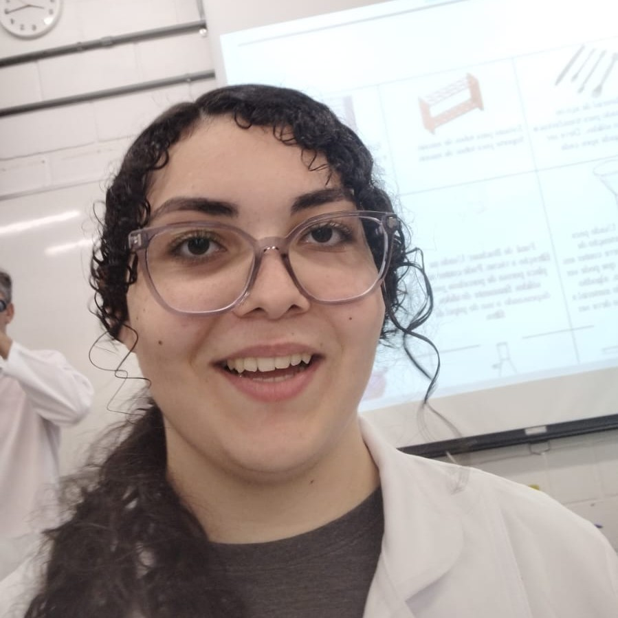
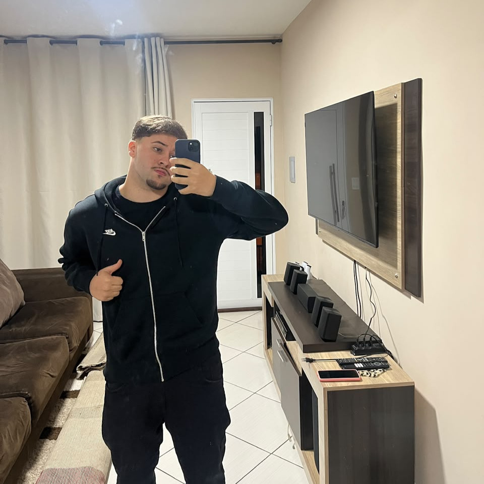
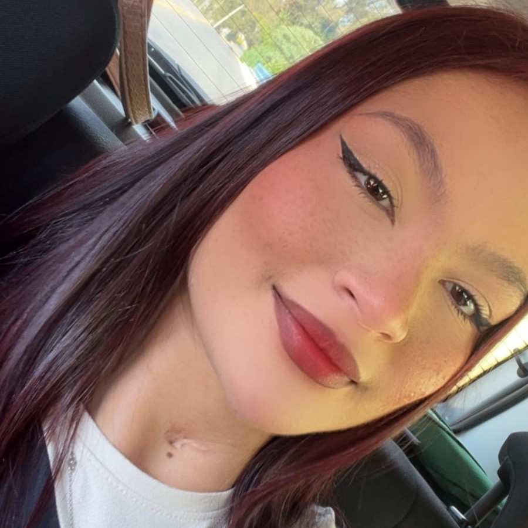

Integrantes da Equipe
Conheça os alunos responsáveis pelo desenvolvimento mecatrônico, projeto eletrônico e documentação da Caixinha Teimosa MarS.
Jorge Henrique B. S. Jr.
RA: 202601938Estudante de Engenharia da Computação, com conhecimentos em C, Python, Arduino e Linux. Possui interesse em programação, eletrônica e sistemas computacionais, buscando aplicar seus conhecimentos no desenvolvimento de soluções tecnológicas e contribuir para o crescimento do projeto MarS.

SSStephane C. P. dos Santos
RA: 202601023Estudante de Engenharia da Computação, dedicada ao aprendizado contínuo e à resolução de problemas. Busca aprimorar suas habilidades técnicas e contribuir para o desenvolvimento de projetos por meio da colaboração e da responsabilidade.
Matheus Gama
RA: 202609010Estudante de Engenharia da Computação na USF, responsável pela gestão do projeto MarS — Caixinha Teimosa. Atua na organização e no planejamento, buscando melhorias e novas possibilidades para o projeto.

BGBruno Gomes
RA: 202642223Estudante dedicado ao desenvolvimento pessoal e profissional, comprometido com o aprendizado contínuo e o trabalho em equipe. Busca aprimorar suas habilidades e contribuir positivamente para o desenvolvimento do projeto MarS.

GSGabrielly da Silva Silvino
RA: 202639785Estudante de Engenharia da Computação na USF, com formação técnica em Redes de Computadores pelo SENAI. Possui conhecimentos em programação, infraestrutura de redes e sistemas de comunicação.
Navegação Rápida
Acesse qualquer outra seção do projeto diretamente por aqui: